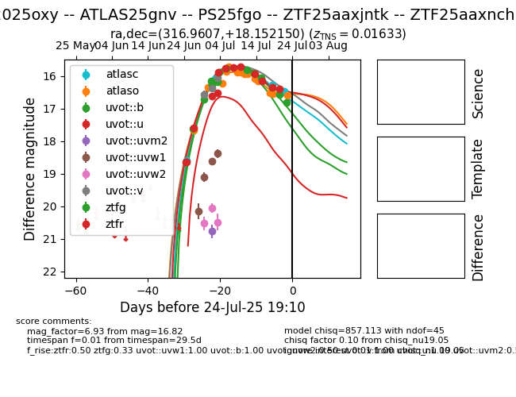

Target 2025oxy at 2025-07-24 19:10, see:
FINK: fink-portal.org/2025oxy
Lasair: lasair-ztf.lsst.ac.uk/objects/2025oxy
ALeRCE: alerce.online/object/2025oxy
TNS: wis-tns.org/object/2025oxy
YSE: ziggy.ucolick.org/yse/transient_detail/2025oxy
alt names
ZTF25aaxnchn (ztf)
ZTF25aaxjntk (fink)
2025oxy (tns,yse)
ATLAS25gnv (atlas)
PS25fgo (panstarrs)
coordinates:
equatorial (ra, dec) = (316.9607,+18.15215)
galactic (l, b) = (66.4014,-19.39547)
photometry
last atlasc=16.47, atlaso=16.60, uvot::b=16.17, uvot::u=16.51, uvot::uvm2=20.77, uvot::uvw1=18.38, uvot::uvw2=20.49, uvot::v=16.05, ztfg=16.82, ztfr=16.41
4 atlasc, 16 atlaso, 3 uvot::b, 2 uvot::u, 1 uvot::uvm2, 4 uvot::uvw1, 3 uvot::uvw2, 3 uvot::v, 10 ztfg, 11 ztfr detections
